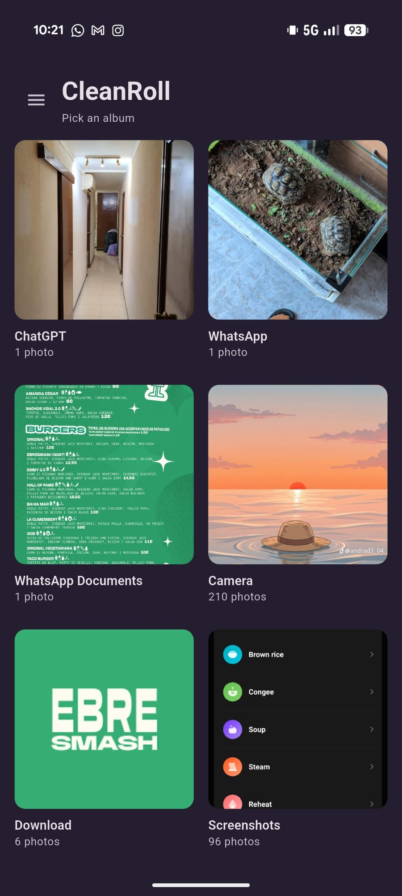
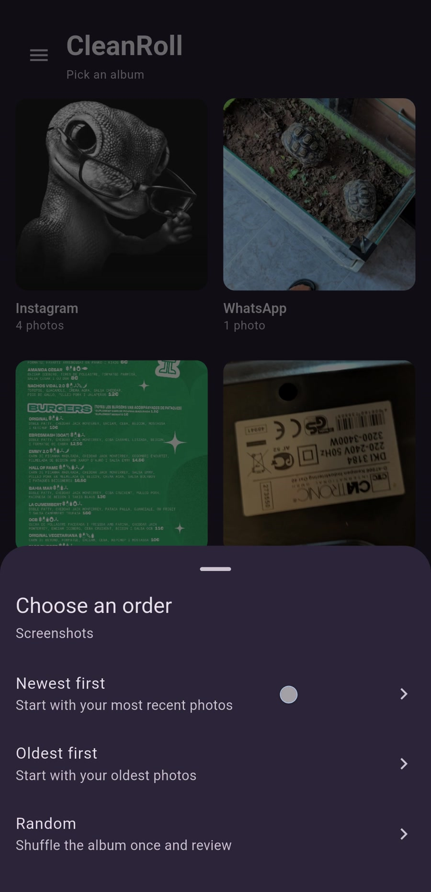
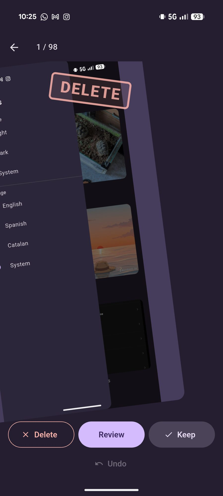
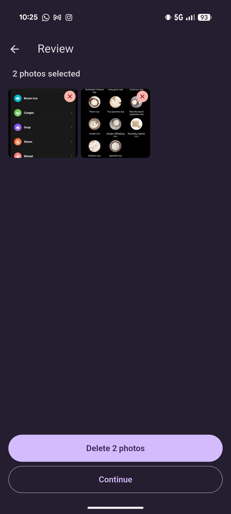
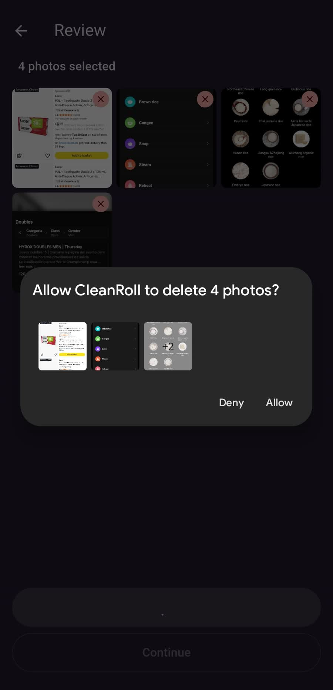

Mark, don't delete
Swiping Delete only flags the photo. The gallery changes when you confirm deletion in Review.
Photo cleaner for Android
the camera roll stays local.
Pick an album, swipe to keep a photo or mark it, and confirm deletion whenever you want. Photos never leave the phone.
CleanRoll-v1.0.2.apk · 46.6 MB
How it works

01
A folder from the gallery. CleanRoll does not create, rename, or move albums.

02
Newest first, oldest first, or a one-time shuffle. Photos in the album appear in that order.

03
One way you keep it. The other, you mark it. A tap works too. Undo covers the last five decisions.

04
Open Review whenever you want, including halfway through the album. Remove the ones you don't want and look at a thumbnail full screen.

05
Delete opens the system dialog. If you cancel, you stay on Review with the selection intact.
The detail
Swiping Delete only flags the photo. The gallery changes when you confirm deletion in Review.
If you close the app before confirming, the library stays the same. There is no half-finished cleanup saved to disk.
You don't have to reach the end. Review, delete the current selection, and continue on the same photo.
Newest to oldest, the other way around, or a shuffle that happens once when you open the album.
If you allow only some photos, CleanRoll only sees those. The rest of the gallery stays out of the session.
When it finishes it says whether everything, part, or nothing was deleted. Canceling the system dialog does not count as a failure.
Privacy
CleanRoll has no account, no server, and no analytics. The walkthrough needs no network. On the phone, only the theme and the language are saved. Everything else lives while the app is open.
Download
Android, as an APK. CleanRoll does not update itself and there is nothing to export before changing versions.
Download APKv1.0.2 · CleanRoll-v1.0.2.apk · 46.6 MB
Published APKs are signed with the debug key. If Android rejects an update because the signature does not match, uninstall the previous version and install the new one. Uninstalling the app does not delete your photos.